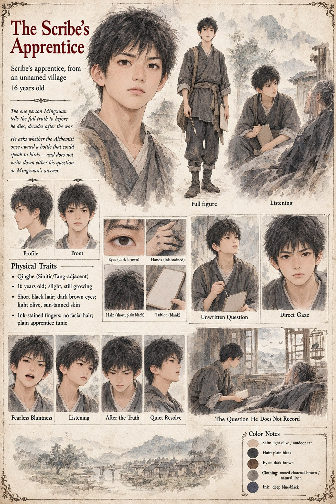

The Scribe's Apprentice
Scribe's Apprentice, from an Unnamed Village · 16 years old
A scribe's apprentice from a village he never names, sent decades after the war to record whatever an aging Mingxuan is willing to say for the historical account. Instead of asking about the peace council, or the war, or the Concord that ended it, he asks the one question that has apparently followed him from wherever he first heard the rumor: whether the old Alchemist really once owned a bottle that could speak to birds.
Mingxuan answers him honestly. The boy writes down neither the question nor the answer, which is, as far as the record goes, the closest anyone in Qinghe ever comes to being told the truth about Case 3115 on purpose.
“Is it true the Alchemist once owned a bottle that could speak to birds?”
Appears in The Listening Water